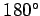

Ebene Figuren heißen axialsymmetrisch oder spiegelsymmetrisch, wenn einander entsprechende Punkte durch eine räumliche Drehung von  um eine Gerade g zur Deckung gebracht werden können.

Die senkrechten Abstände einander zugeordneter Punkte von der Symmetrieachse, der Geraden g, sind gleich groß. Der Umlaufsinn der gedrehten Figur wird bei der Spiegelung an der Geraden g umgekehrt. Man spricht daher von nichtgleichsinnig kongruenten Figuren. Man nennt diese Transformation Umklappung. Da Größe und Gestalt der Figuren dabei erhalten bleiben, spricht man auch von nichtgleichsinniger Kongruenztransformation. Der Umlaufsinn der ebenen Figuren wird bei dieser Transformation umgekehrt.
Hinweis: Für räumliche Figuren gelten analoge Aussagen.